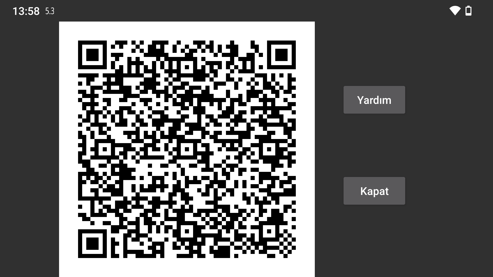

Diğer telefonda Sol Menü → Fotoğraf ile QR kodunu tarayarak klon bağlantısının diğer tarafını yapılandırabilirsiniz.
Orta Sol Menü→Klon→Otomatik QR ile bağlantının her iki tarafı otomatik olarak oluşturulur. Bunu kullanarak telefondaki tüm verileri başka bir telefona gönderebilirsiniz.
Bu şekilde yanlışlıkla çok sayıda bağlantı oluşturulabilir. Bu bağlantılara dokunup Değiştir ve ardından Sil'e basarak silebilirsiniz.
Orta Sol Menü→Klon→Bağlantı Ekle → QR'ı kullanarak telefonda bağlantının bir tarafını manuel olarak yapılandırın ve diğer tarafı QR kodunu tarayarak yapılandırın.